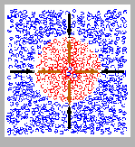
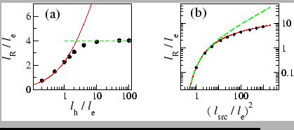

Next: Coherence in driven non-equilibrium
Up: Electron-hole and exciton systems
Previous: Electron-hole and exciton systems
In mid-2002, two semiconductor-optics groups reported dramatic
ring-shaped photoluminescence patterns when a focused laser was used
to excite electron-hole pairs near a coupled quantum well system
biased with an electric field.
It was later found that the luminescence ring is well-explained by
classical reaction-diffusion dynamics of the electrons and holes. The
idea is that there is net hole injection into the quantum well near
the laser spot, together with an electron source due to leakage
current that is roughly uniform across the two-dimensional (2D)
quantum well plane. This combination can lead to a charge-separated
steady state configuration, with a circular hole-rich island sustained
by the localized hole source in an electron-rich sea. The circular
interface, where outward-diffusing holes recombine with
inward-diffusing electrons, is the luminescence ring.
The explanation of the ring phenomenon in terms of a
diffusion-reaction model already appeared in 2003/2004. However, a
thorough quantitative analysis of the basic model was lacking. Around
July 2005 I finished writing up some of my work on the model
(cond-mat/0507058). The paper presents a detailed analytic treatment
of the diffusion-reaction model, together with extensive numerical
results.
Figure 4:
Left: Cartoon of charge-separated steady state. Center & Right:
Variation of interface radius with hole tunneling and with
source strength ratio. Deatils in
Ref. [8].

 |
One of the experimental groups see a modulation pattern along the
ring. Like a number of other theorists, I spent a considerable amount
of time in 2004 trying to identify the mechanism for this modulation
instability. Unfortunately, this effort was not successful, and the
modulation pattern remains a mystery.
For the luminescence ring itself, I have plans for one further
calculation. The mechanism for having a net injection of holes into
the quantum wells, even though electrons and holes are always created
in pairs, is not well-understood. I have a model for the injection
asymmetry, but I did not yet have time to check details.
Next: Coherence in driven non-equilibrium
Up: Electron-hole and exciton systems
Previous: Electron-hole and exciton systems
M. Haque
2006-01-29